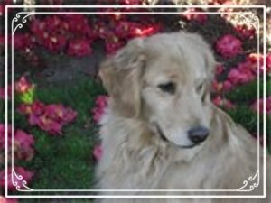
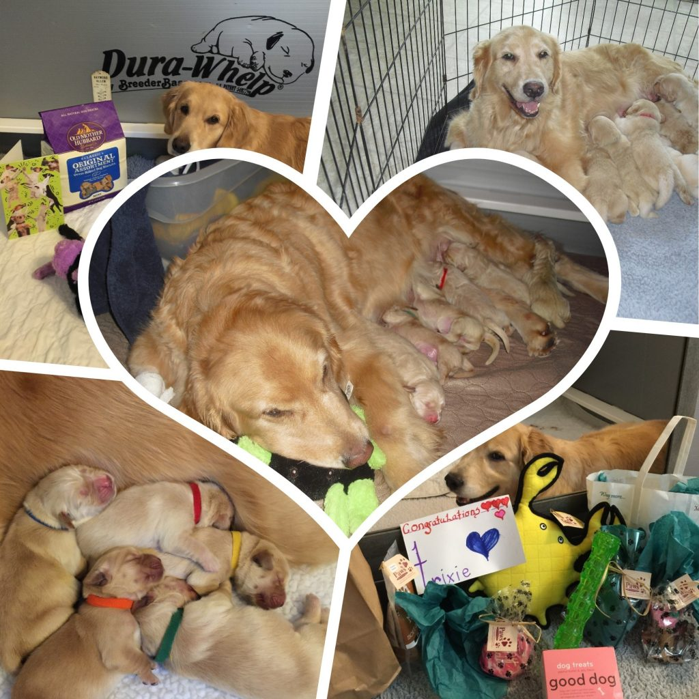
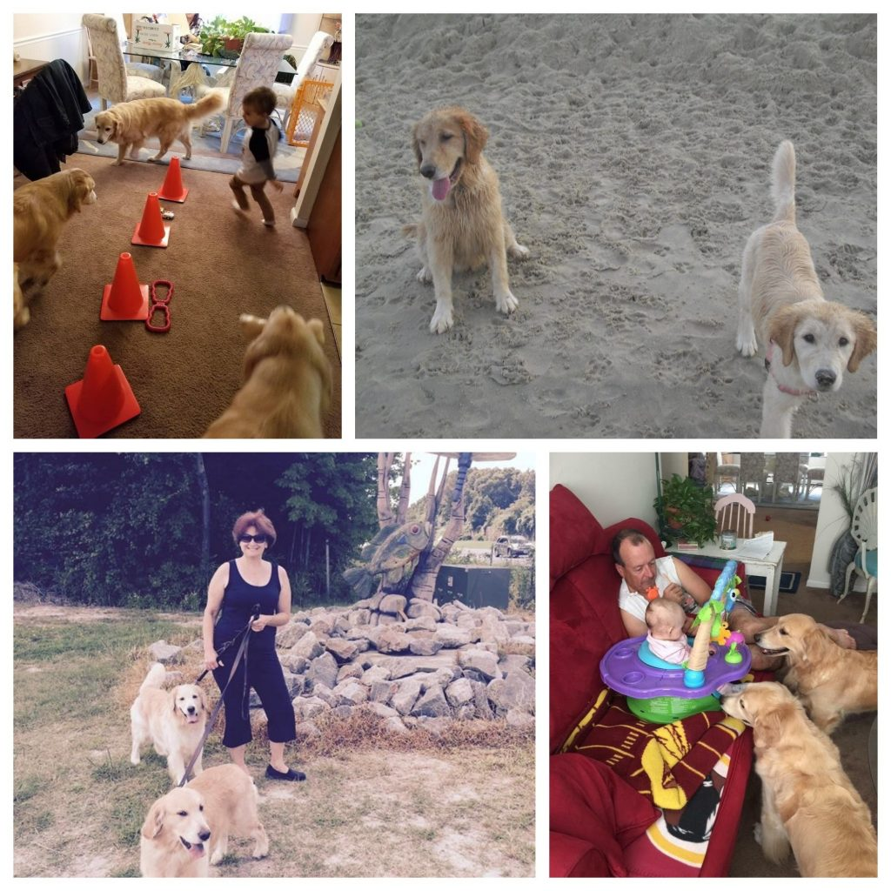
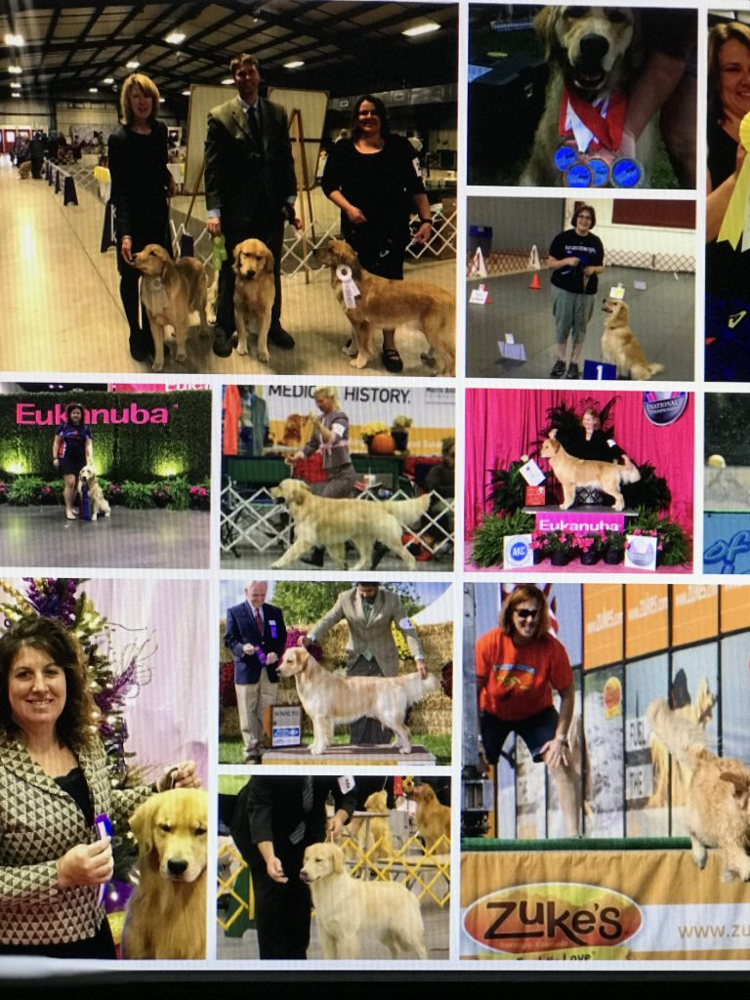
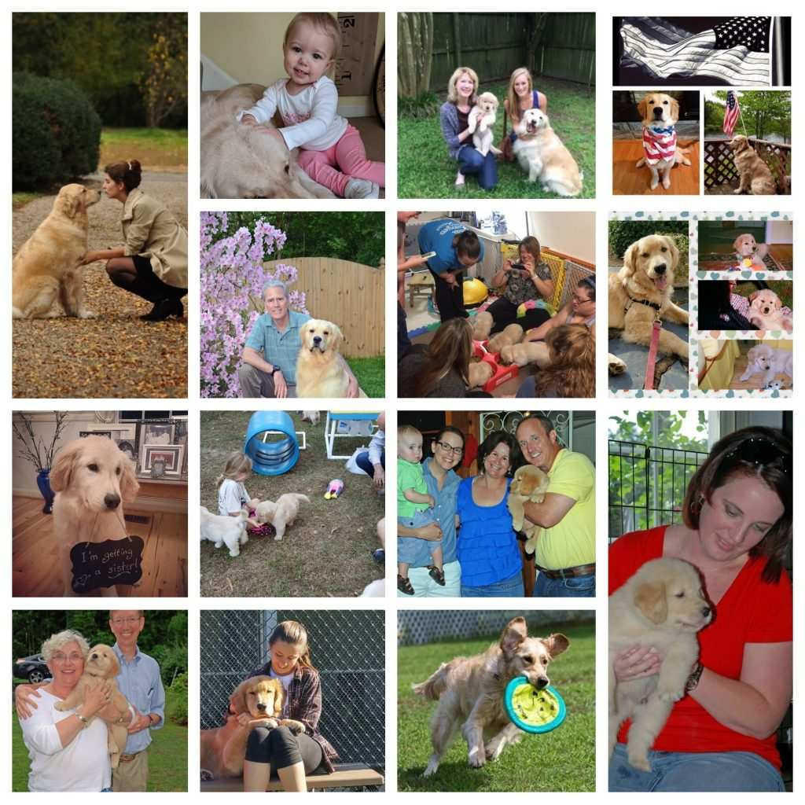

We Are Carova !
Our Foundation:

Carova Golden Retrievers would not have been possible without our lovely, Pawnee Mooving To The Music CCA RN, CGC (Opal). Opal came to us from Toni Norton ( Pawnee Golden Retrievers).
Opal showed in the Conformation ring, obtained her Rally Novice Title and had her Canine Good Citizen Certificate. At age 11 1/2, Opal was awarded a Certificate of Conformation at the 2017 Golden Retriever National Specialty. Out of all the things we did with Opal, her favorite activity was swimming at Carova Beach and jumping off the deck into our family pool. I do believe some of her puppies and grand puppies, have inherited her love of water activities. Opal was always an easy going girl, easy to train and we see these traits in her children and grandchildren.
{kind=link}
On March 15, 2010, Momma Opal began our Carova family with a litter of ten puppies. Here we are 13 years later , still bringing joy to families. With the wonderful world of social media, FB allows families to stay in touch, post pictures and ask questions in regards to anything Golden Retriever. I have a very special Carova Golden Retrievers FB page set up for our families. I hope new families will utilize this technology for the lifetime of their puppies . You can also find us on Tic Toc and Instagram @carovagoldens

Opal, Trixie and Gabby . Three generations!
Puppies from our home to yours, takes planning. Lots and lots of planning. I often plan a breeding one to two years in advance. It takes time to study pedigrees, get health clearances and check health clearances of generations , not just the sire and the dam being used.
I am a small breeder who recently moved from Chesapeake Va to NC ( to be closer to family) . I keep three girls at any given time and once they can no longer breed they stay with us. They are our family in addition to three daughters , their spouses, and four grandchildren. My mentor always said, ” Goldens don’t want to be one of many. They love their attention.” I have held those words close to my heart, limit my number to three, and have developed a way that I can still move our Carova program once these girls no longer breed.


My puppies go into a variety of homes. I need puppies in show and performance homes so that we have connections with breeders who share the same goals for our breed.
These connections help me find the best of the best to meet the needs of my breeding girls.
The puppies used for breeding all help bring diversity into the gene pool helping to create happy healthy puppies for future generations.
Puppies who show potential at their seven week evaluations will be placed into homes that allow them to come back for breeding . This is the only way that I can keep our Carova program moving forward .
I need awesome pet homes because not every litter will produce puppies that are better than what I have in our breeding program to date.
With all the behind the scenes work, our true mission is to have happy, healthy puppies with sound temperaments that embellish your family. Puppies that become a part of your everyday life and share your adventures along the way.
As you think about your future puppy, think about what kind of home you can provide. Can you provide a loving home to a pet? Can you provide a show / performance home? Can you provide an awesome home for a female that will comeback to me for breeding so that the Carova program continues ? Can you provide a show home to a handsome boy that can hopefully pass on some wonderful traits to better the Golden Retriever breed? It truly takes a village . I hope you will consider being a part of our family in some capacity.
To become part of our Carova family, visit the planned litter page and email me for more information. A reply email will be sent with all the particulars in regards to puppy applications, puppy prices and explanation as why your 500.00 deposit will not be taken until puppies are three weeks old.
“We are Carova!”
